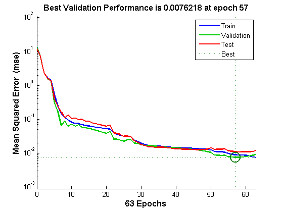
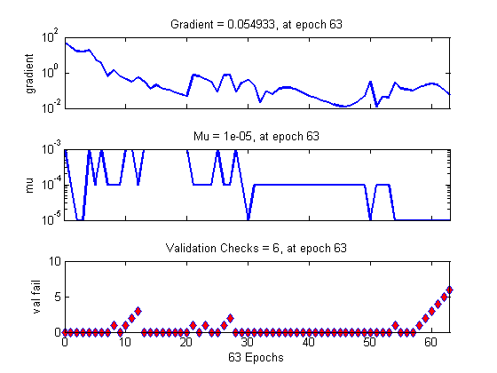
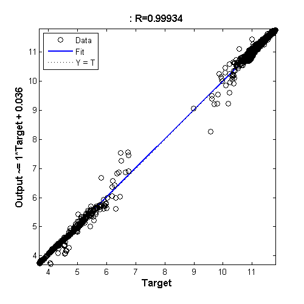
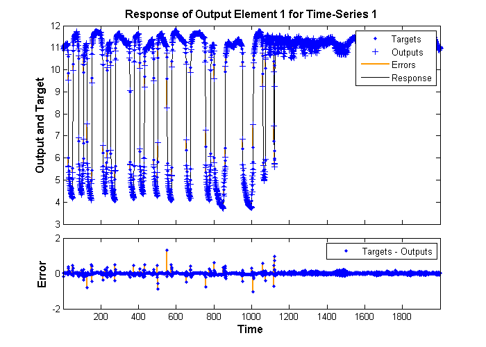
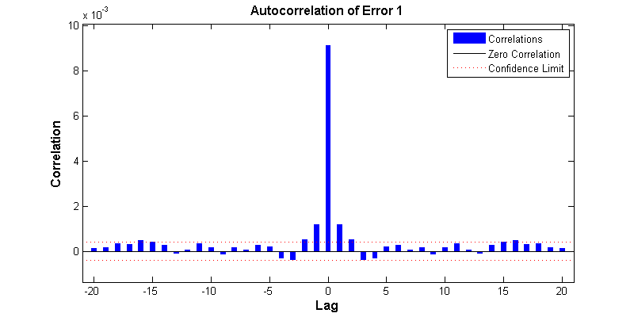
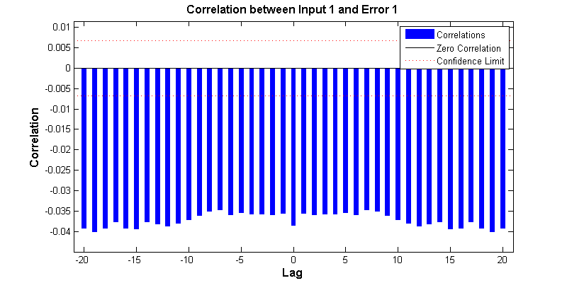
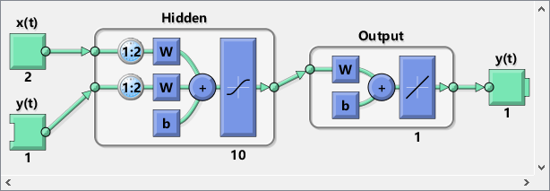
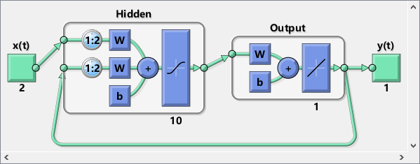
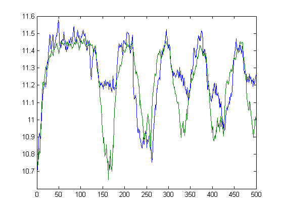

Contents
Matlab神经网络43个案例分析
% 动态神经网络时间序列预测研究-基于MATLAB的NARX实现 % by 王小川(@王小川_matlab) % http://www.matlabsky.com % Email:sina363@163.com % http://weibo.com/hgsz2003
清空环境变量
clear clc
加载数据
load phdata
inputSeries = phInputs;
targetSeries = phTargets;
建立非线性自回归模型
inputDelays = 1:2; feedbackDelays = 1:2; hiddenLayerSize = 10; net = narxnet(inputDelays,feedbackDelays,hiddenLayerSize);
网络数据预处理函数定义
net.inputs{1}.processFcns = {'removeconstantrows','mapminmax'};
net.inputs{2}.processFcns = {'removeconstantrows','mapminmax'};
时间序列数据准备工作
[inputs,inputStates,layerStates,targets] = preparets(net,inputSeries,{},targetSeries);
训练数据、验证数据、测试数据划分
net.divideFcn = 'dividerand'; net.divideMode = 'value'; net.divideParam.trainRatio = 70/100; net.divideParam.valRatio = 15/100; net.divideParam.testRatio = 15/100;
网络训练函数设定
net.trainFcn = 'trainlm'; % Levenberg-Marquardt
误差函数设定
net.performFcn = 'mse'; % Mean squared error
绘图函数设定
net.plotFcns = {'plotperform','plottrainstate','plotresponse', ...
'ploterrcorr', 'plotinerrcorr'};
网络训练
[net,tr] = train(net,inputs,targets,inputStates,layerStates);
网络测试
outputs = net(inputs,inputStates,layerStates); errors = gsubtract(targets,outputs); performance = perform(net,targets,outputs)
performance =
0.0091
计算训练集、验证集、测试集误差
trainTargets = gmultiply(targets,tr.trainMask); valTargets = gmultiply(targets,tr.valMask); testTargets = gmultiply(targets,tr.testMask); trainPerformance = perform(net,trainTargets,outputs) valPerformance = perform(net,valTargets,outputs) testPerformance = perform(net,testTargets,outputs)
trainPerformance =
0.0091
valPerformance =
0.0076
testPerformance =
0.0111
网络训练效果可视化
figure, plotperform(tr) figure, plottrainstate(tr) figure, plotregression(targets,outputs) figure, plotresponse(targets,outputs) figure, ploterrcorr(errors) figure, plotinerrcorr(inputs,errors)     
close loop模式的实现
更改NARX神经网络模式
narx_net_closed = closeloop(net); view(net) view(narx_net_closed) % 计算1500-2000个点的拟合效果 phInputs_c=phInputs(1500:2000); PhTargets_c=phTargets(1500:2000); [p1,Pi1,Ai1,t1] = preparets(narx_net_closed,phInputs_c,{},PhTargets_c); % 网络仿真 yp1 = narx_net_closed(p1,Pi1,Ai1); plot([cell2mat(yp1)' cell2mat(t1)'])  